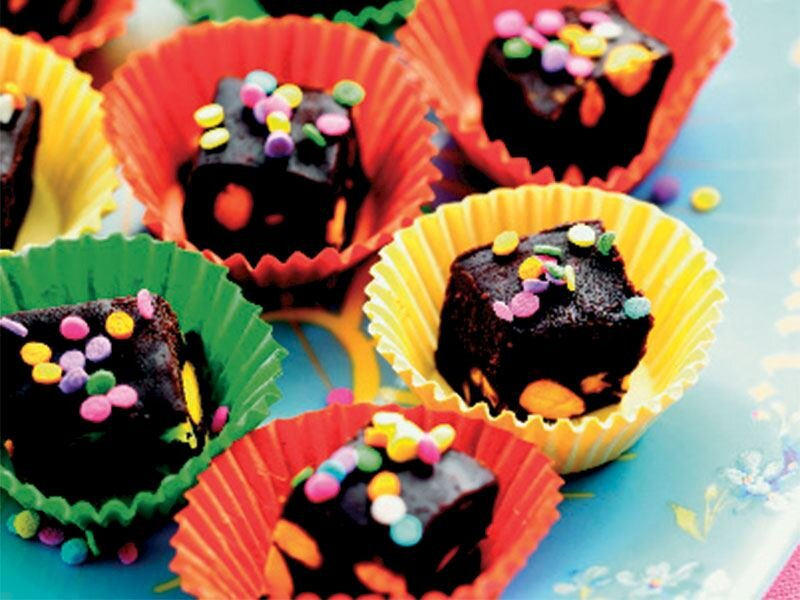

Çikolata Küpleri Tarifi
Bitter çikolatalı ve şam fıstıklı tadımlık lezzetler…Renkli kağıtlarda veya kürdan batırılarak servis edilir. Özellikle kalabalık sofralarda yer verilen çikolata küpleri, doğum günü gibi özel etkinliklerde de sunulabilir.Yalnızca 4 malzemeyle hazırlanan bu lezzete herkes bayılacak. Sofranıza çok yakışacak bu tarif için okumaya devam edin...
Tarif:
Kaç Kişilik:4 kişilik Hazırlama Süresi:30 dakika Pişirme Süresi:10 dakika
